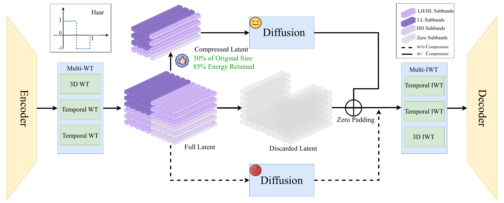
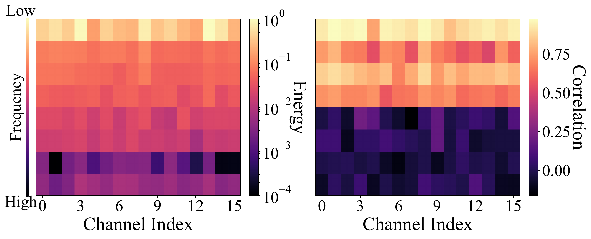
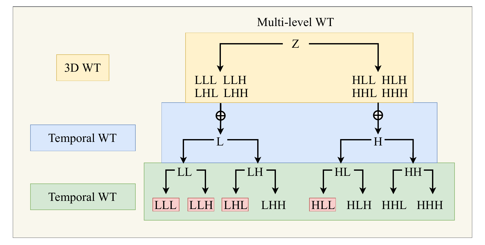
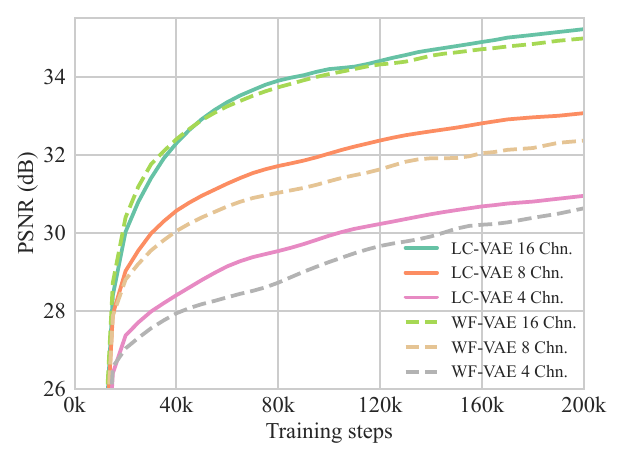
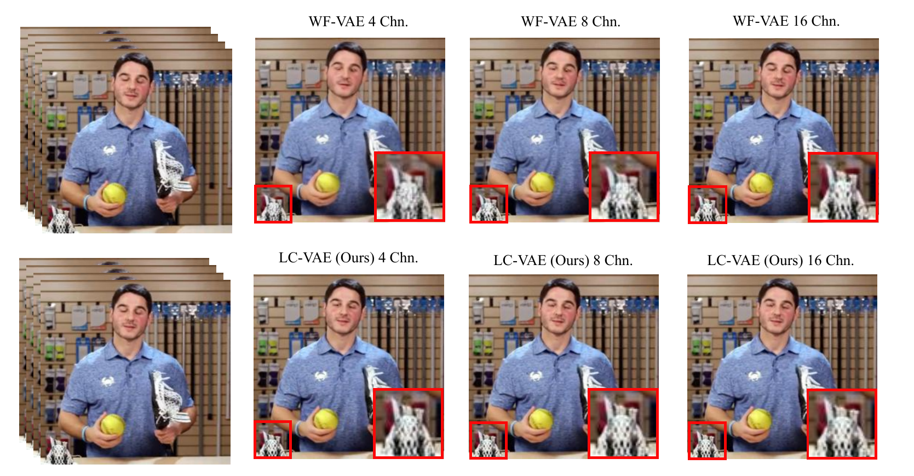
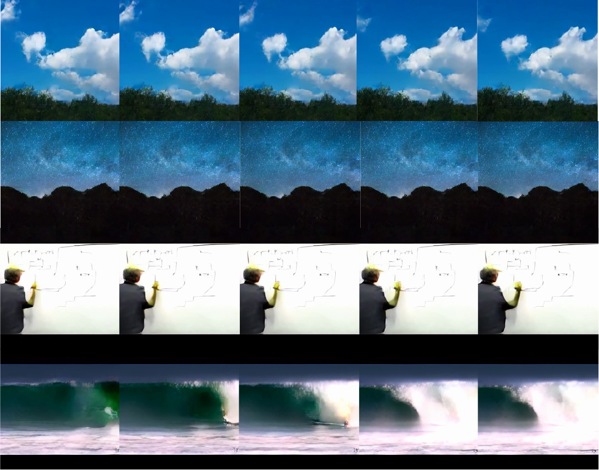

LC-VAE
1Aalto University 2ELLIS Finland Institute 3University of Oulu
{jiarui.guan, wenshuai.zhao, zhengtao.zou, juho.kannala, arno.solin}@aalto.fi
Abstract
Method
LC-VAE compresses the video latent by applying a multi-level 3D Haar wavelet transform and selectively zeroing out the high-frequency subbands. The encoder is forced to focus on diffusion-favorable, low-frequency content — high-frequency texture recovery is delegated to the decoder.

Figure 2. Overview of the LC-VAE framework. The model first applies a multi-level wavelet transform (Multi-WT) to the latent features produced by the encoder. Low-frequency channels are selected to retain compact yet informative representations, while the high-frequency subbands are zeroed out. During generation, diffusion operates within this compressed subspace. The sampled representation is subsequently zero-padded, passed through multi-scale inverse wavelet transforms (Multi-IWT), and decoded to reconstruct the video.

Figure 3. Energy and correlation distribution across frequencies. Low-frequency subbands exhibit higher energy and stronger temporal correlation, whereas high-frequency subbands are less informative.

Multi-level WT. Hierarchical 3D Haar wavelet decomposition producing 8 subbands per level — {LLL, LLH, LHL, HLL} are retained; {LHH, HLH, HHL, HHH} are zeroed out.
Experiments
We evaluate LC-VAE against six strong baseline video VAEs across multiple large-scale benchmarks. Experiments cover video reconstruction quality, zero-shot generalization, and diffusion-based generation capability.

Figure 5 — Validation PSNR during training. Across all channel sizes (Chn. = 4, 8, 16), LC-VAE consistently achieves higher validation PSNR than WF-VAE throughout training, demonstrating faster convergence and better reconstruction quality.
Zero-shot test on WebVid-10M and Panda-70M. TCPR = token compression ratio; Chn. = latent channels. Bold = best.
| Method | TCPR | Chn. | WebVid-10M | Panda-70M | ||||||
|---|---|---|---|---|---|---|---|---|---|---|
| PSNR ↑ | SSIM ↑ | LPIPS ↓ | rFVD ↓ | PSNR ↑ | SSIM ↑ | LPIPS ↓ | rFVD ↓ | |||
| SD-VAE | 64× | 4 | 30.19 | 0.838 | 0.057 | 284.9 | 30.46 | 0.890 | 0.040 | 183.0 |
| SVD-VAE | 64× | 4 | 31.18 | 0.869 | 0.055 | 188.7 | 31.04 | 0.906 | 0.038 | 137.7 |
| CV-VAE | 256× | 4 | 30.76 | 0.857 | 0.080 | 369.2 | 30.18 | 0.880 | 0.067 | 296.3 |
| OD-VAE | 256× | 4 | 30.69 | 0.864 | 0.055 | 255.9 | 30.31 | 0.894 | 0.044 | 191.2 |
| Open-Sora VAE | 256× | 4 | 31.52 | 0.876 | 0.056 | 208.5 | 31.21 | 0.910 | 0.040 | 155.6 |
| WF-VAE | 256× | 16 | 33.62 | 0.912 | 0.036 | 96.2 | 33.11 | 0.938 | 0.026 | 76.4 |
| LC-VAE (Ours) | 256× | 16 | 34.41 | 0.921 | 0.031 | 74.8 | 34.07 | 0.944 | 0.022 | 58.3 |

Figure 4 — Qualitative comparison of reconstruction performance. LC-VAE vs. WF-VAE under the same compression ratios (equivalent channels). LC-VAE reconstructs finer details with fewer artifacts across diverse scenes.
Reconstruction on three unseen datasets. LC-VAE maintains consistently high performance while WF-VAE suffers a 0.5–1.5 dB PSNR drop on out-of-domain data.
| Method | Chn. | UCF-101 | SkyTimelapse | OpenVid-1M | |||||||||
|---|---|---|---|---|---|---|---|---|---|---|---|---|---|
| PSNR ↑ | SSIM ↑ | LPIPS ↓ | rFVD ↓ | PSNR ↑ | SSIM ↑ | LPIPS ↓ | rFVD ↓ | PSNR ↑ | SSIM ↑ | LPIPS ↓ | rFVD ↓ | ||
| WF-VAE | 4 | 30.32 | 0.896 | 0.043 | 337.7 | 36.59 | 0.944 | 0.020 | 100.7 | 32.98 | 0.883 | 0.042 | 193.1 |
| LC-VAE (Ours) | 4 | 30.57 | 0.901 | 0.033 | 340.2 | 36.87 | 0.949 | 0.015 | 87.1 | 33.48 | 0.899 | 0.024 | 145.0 |
| WF-VAE | 8 | 31.86 | 0.920 | 0.029 | 189.5 | 37.71 | 0.954 | 0.014 | 61.7 | 34.20 | 0.907 | 0.031 | 109.9 |
| LC-VAE (Ours) | 8 | 32.69 | 0.929 | 0.023 | 198.9 | 38.65 | 0.962 | 0.010 | 50.4 | 35.27 | 0.925 | 0.017 | 89.4 |
| WF-VAE | 16 | 34.40 | 0.949 | 0.017 | 81.3 | 39.85 | 0.968 | 0.008 | 28.1 | 36.28 | 0.933 | 0.017 | 51.0 |
| LC-VAE (Ours) | 16 | 34.83 | 0.951 | 0.016 | 106.1 | 40.30 | 0.972 | 0.008 | 27.3 | 37.06 | 0.946 | 0.012 | 50.4 |
FVD₁₆ and IS evaluated on SkyTimelapse (unconditional) and UCF-101 (class-conditional) using Latte-L trained for 200k steps.
| Method | Chn. | SkyTimelapse | UCF-101 | |
|---|---|---|---|---|
| FVD₁₆ ↓ | FVD₁₆ ↓ | IS ↑ | ||
| WF-VAE | 4 | 198.87 | 565.80 | 61.19 |
| LC-VAE (Ours) | 4 | 240.56 | 509.76 | 70.71 |
| WF-VAE | 8 | 213.23 | 687.60 | 60.57 |
| LC-VAE (Ours) | 8 | 201.24 | 654.96 | 66.72 |
| WF-VAE | 16 | 195.94 | 721.43 | 52.66 |
| LC-VAE (Ours) | 16 | 187.68 | 735.04 | 54.89 |

Figure 6 — Generated videos using LC-VAE with Latte. SkyTimelapse (top) and UCF-101 (bottom) datasets. LC-VAE's compact low-frequency latent enables more coherent and higher-quality generation across diverse video categories.
Comparing LC-VAE against post-training latent compression (PTLC) applied to a pre-trained WF-VAE. Results confirm that joint training with latent compression is essential — PTLC degrades reconstruction by up to 5 dB PSNR.
| Method | Chn. | WebVid-10M | Panda-70M | ||||
|---|---|---|---|---|---|---|---|
| PSNR ↑ | SSIM ↑ | LPIPS ↓ | PSNR ↑ | SSIM ↑ | LPIPS ↓ | ||
| WF-VAE (PTLC) | 8 | 29.24 | 0.839 | 0.068 | 27.51 | 0.853 | 0.078 |
| LC-VAE (Ours) | 8 | 31.49 | 0.921 | 0.025 | 31.89 | 0.891 | 0.030 |
| WF-VAE (PTLC) | 16 | 30.49 | 0.873 | 0.055 | 28.67 | 0.874 | 0.068 |
| LC-VAE (Ours) | 16 | 33.78 | 0.921 | 0.021 | 33.64 | 0.945 | 0.017 |
Citation
If you find LC-VAE useful in your research, please consider citing our paper: